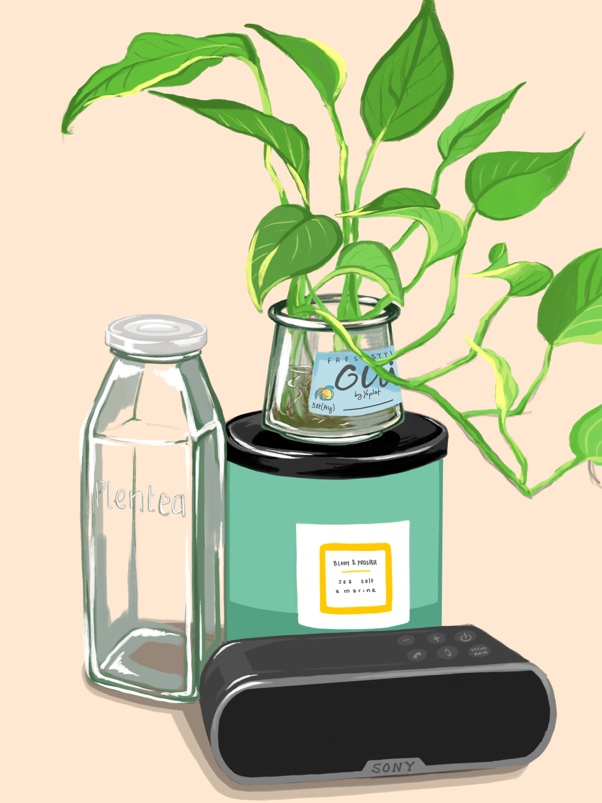
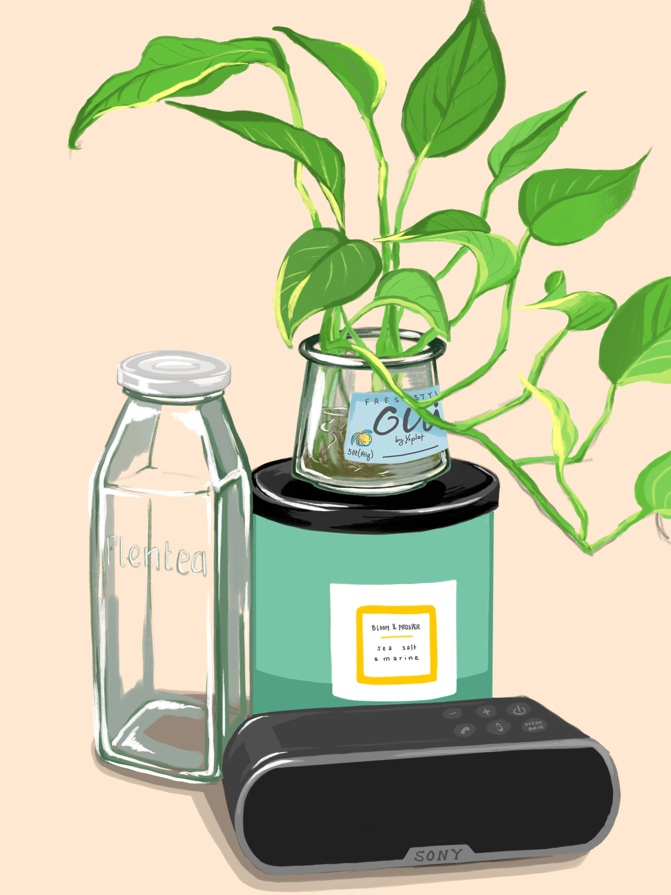

Logo design for a ficational company that offers bus/hiking tours around Berkeley. Done on iPad.
A honey-themed logo! Done in Illustrator
View of SF. Done in Illustrator
A study of complementary colors. Done in Illustrator.
Illustration of girl. Done on iPad.
Illustration of hands. Done on iPad.
Illustration of my essential everyday items. Done on iPad.
Illustration of my decorated waterbottle! Done in Illustrator.
Illustration of my daily skincare routine, featuring my favorite products. Done in Illustrator.
Painting from photo reference; a study of the color blue. Acrylic; 12in by 16in.
Close-up of MONOCHROME.
Painting from life, a study of my desk plant. Acrylic; 8in by 10in.
Close-up of DESK PLANT.